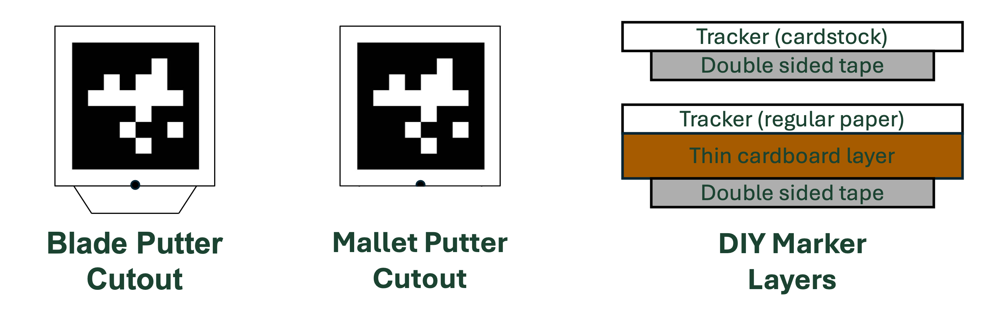
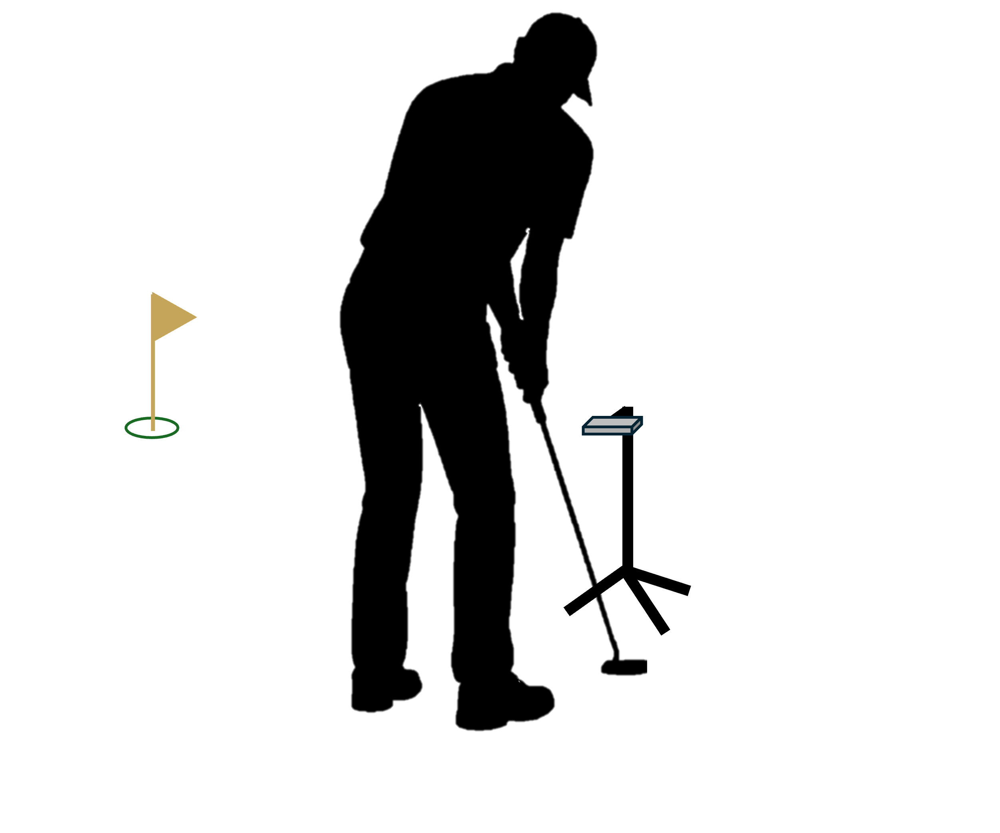

You can be up and running with PuttrLab in about 10 minutes. Here's everything you need to know.
Download PuttrLab from the App Store — it's free. Requires iPhone 12 or later running iOS 17+. You can unlock PuttrLab Pro at any time with a one-time $19.99 in-app purchase.
You need a tripod or mount that can hold your iPhone in landscape orientation with the camera angled downward. Most adjustable phone tripods on Amazon in the $15–$20 range work well.
Recommended tripods:
Download our free marker PDF, print it on pure white cardstock, cut it out, and attach it to your putter with double-sided tape. Print quality matters — see the marker attachment section below for full instructions and tips.
The marker attaches to the top of your putter head — the flat surface you see when you look down at address. It works with both blade and mallet style putters. The black dot must be closest to the putter face or metrics will be inaccurate.

Print the marker PDF on pure white cardstock, or print on regular paper and secure it to a piece of thin cardboard for rigidity. The printing quality must be high for the tracking to work effectively (no smudges, streaks, lines, fading, etc.). Cut out the marker precisely along the thin black line — the white border around the black pattern is part of the marker and must be included. Apply a piece of double-sided tape to the back, then press it firmly onto the top of your putter head with no bubbles or lifted edges. The tab at the bottom is intended for blade style putters and can be cut off if it's not needed.

Set your tripod behind where you will stand to putt, with the phone mounted in landscape orientation and the camera facing straight down at the ground.

Prefer to watch? Our YouTube tutorial walks you through the entire process — from unboxing your marker to completing your first putting session.
PuttrLab is free to download. Upgrade to Pro inside the app whenever you want the full set of metrics, trend tracking, and coaching tips.